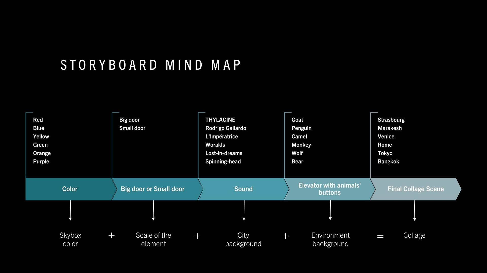
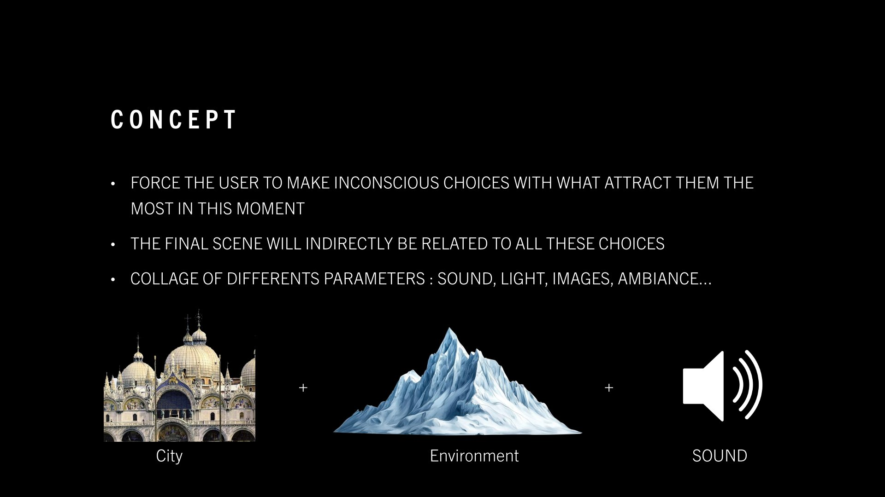
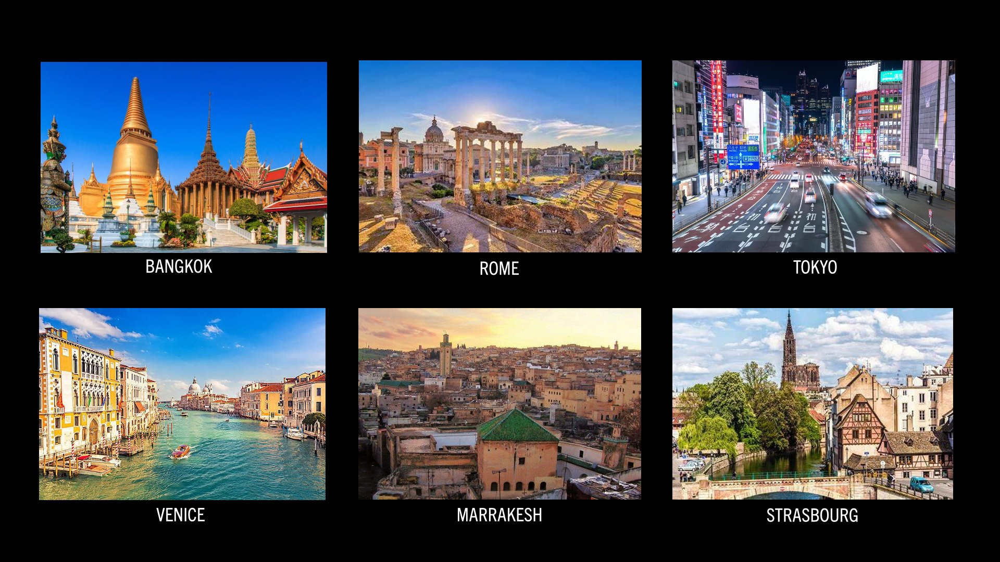
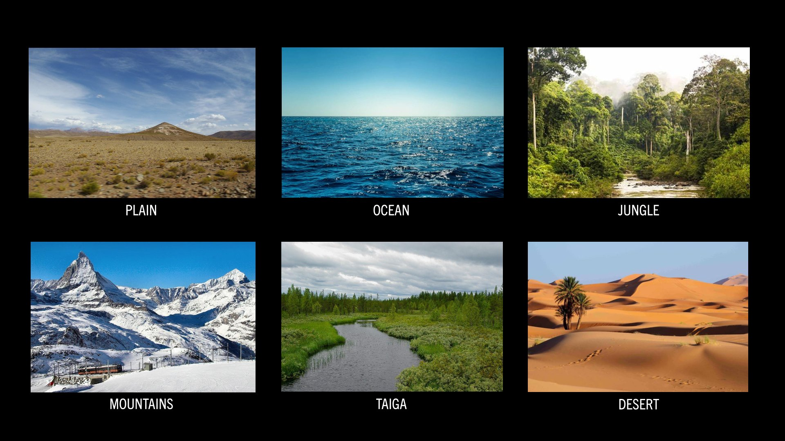
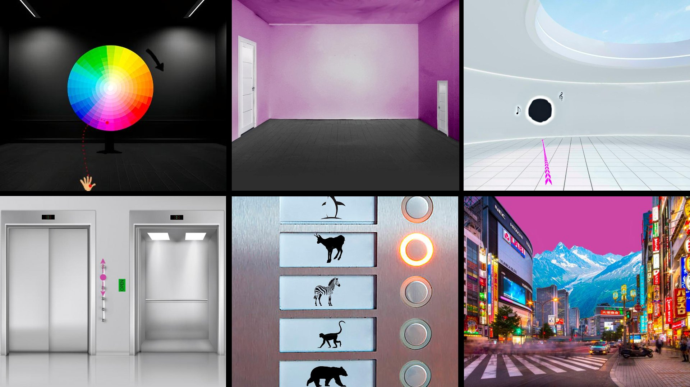

Design Concept
RUACH is an interactive VR experience designed to guide the user's subconscious to create a space that corresponds to their feelings in a precise moment.
The core concept is to force the user to make unconscious choices based on what attracts them most right now. By picking options related to sound, light, images, and ambiance, the final scene becomes a collage of these parameters—indirectly reflecting their current state of mind.

A generated environment reflecting user choices.
System & Interaction
The experience is built around a sequence of choices. Users navigate through different environments—City, Ocean, Jungle, Mountains, Desert—by interacting with elements like elevator buttons or directional paths.
Technical challenges included managing the "elevator problem" for seamless transitions and controlling daylight to match the user's emotional tone. Music is also used dynamically to create different atmospheres, reinforcing the immersive nature of the generated space.

A generated environment reflecting user choices.
Reflection
This project explores the intersection of psychology and spatial design in virtual reality. It questions how our immediate preferences can be translated into architectural and atmospheric elements, creating a personalized "mind palace" in real-time.

Urban textures.

Natural landscapes.

Final spatial collage.